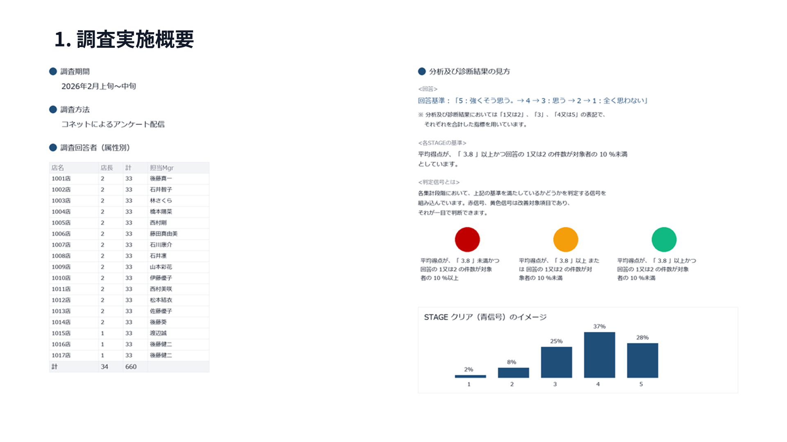
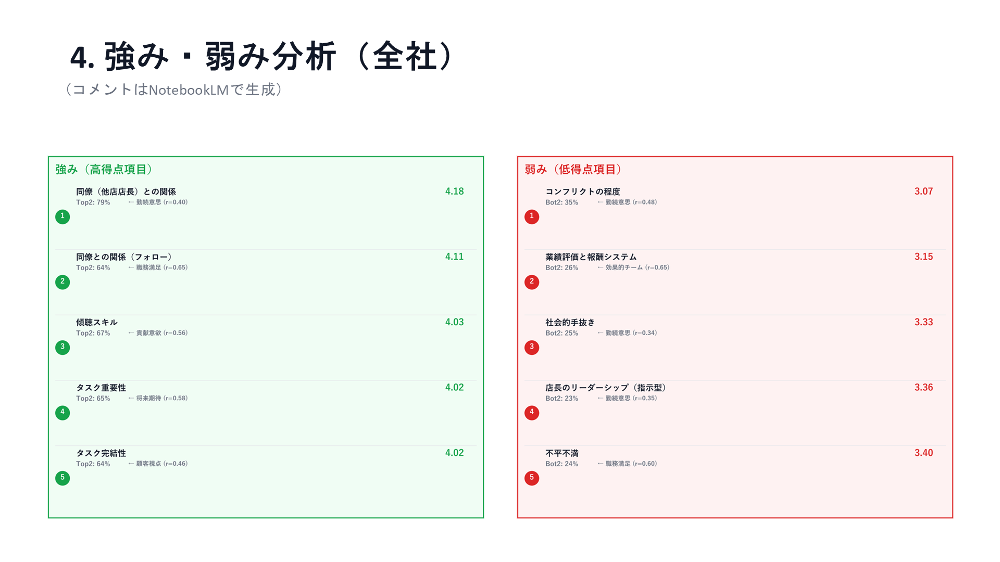
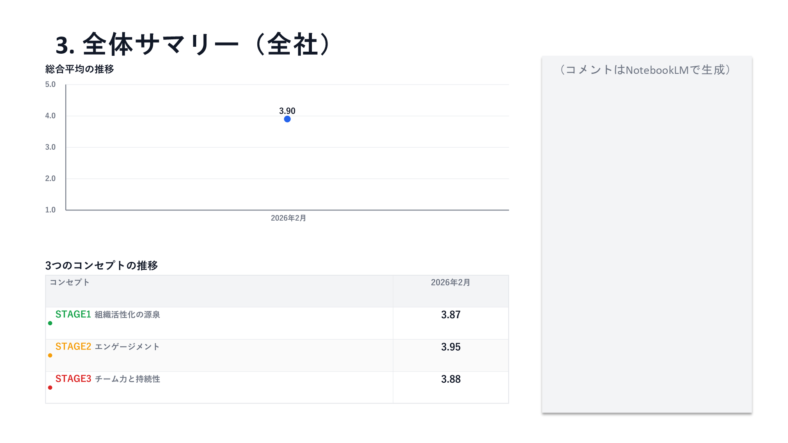
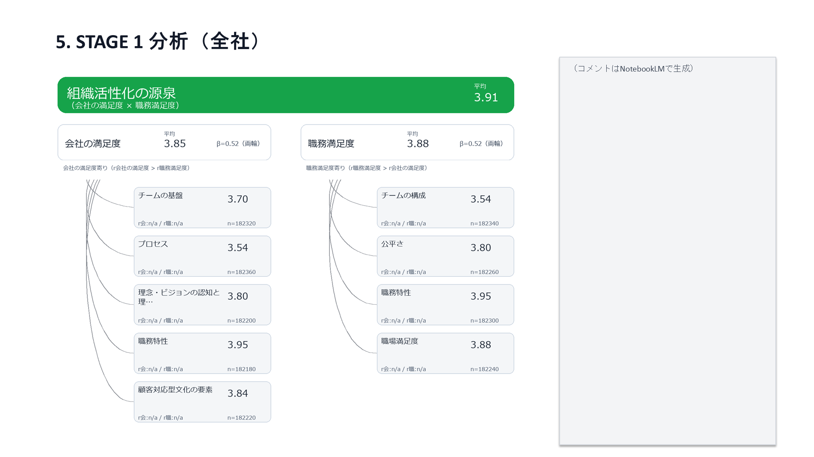
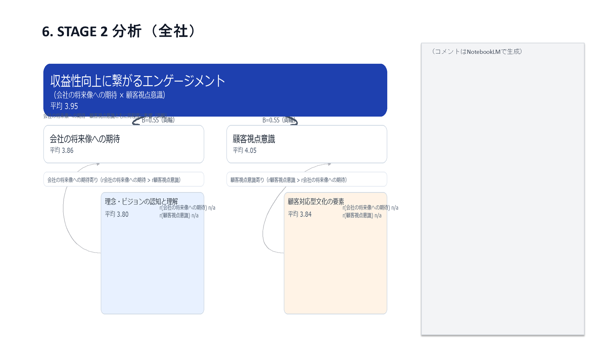

ABOUT
○○○とは
○○○は、従業員へのアンケートを通じて組織の課題を可視化し、 データに基づいた改善提案を行う組織診断サービスです。 経営者・人事担当者・チームリーダーが、 組織の健康状態を把握し、的確な施策を打つことを支援します。

ABOUT
○○○は、従業員へのアンケートを通じて組織の課題を可視化し、 データに基づいた改善提案を行う組織診断サービスです。 経営者・人事担当者・チームリーダーが、 組織の健康状態を把握し、的確な施策を打つことを支援します。
PROBLEM
優秀な人材が次々と辞めてしまい、原因がわからない
現場で何が起きているか、経営層に情報が届かない
研修や制度変更をしても、効果があったのか不明
SOLUTION

従業員の本音を匿名アンケートで収集。 AIが分析し、組織の課題を明確に可視化します。

診断結果に基づき、優先度の高い改善施策を提案。 何から手をつければいいか迷いません。

定期的な診断で変化を追跡。 施策の効果を数値で確認できます。
FEATURES

10分で回答完了。スマホ対応で回答率アップ

グラフやチャートでわかりやすく結果を表示

AIが優先度順に具体的な施策を提案
TARGET
組織全体の状態を把握したい
エンゲージメント向上施策を立案したい
チームの課題を特定したい
PRICE
月額
¥XX,XXX〜（税抜）
※従業員数や機能により変動します
詳しくはお問い合わせください
FLOW
フォームからお気軽に
課題や目的をお伺い
プランを決定
すぐに診断スタート
FAQ
A. お申し込みから最短○日で利用開始できます。
A. はい、完全匿名で回答できます。個人が特定されることはありません。
A. 最低○ヶ月からご契約いただけます。